11.分叉工作流¶
在这一章中，你将学习所有关于Forking Workflow的知识。你可以使用Forking工作流来为一个你只有只读权限的项目做贡献。它主要用于贡献开源项目，但你也可以在私人仓库中使用它。
当你没有推送项目的权限时，你需要将你的修改推送到项目的公共副本上。这个项目的个人公共副本被称为fork。原始或源码库通常被称为upstream版本库。
要请求上游版本库合并你的分叉分支，你需要创建一个包含你的修改的分支的拉取请求。
在本章中，你将学习如何创建一个分叉，保持它的最新状态，并通过拉取请求向上游版本库做贡献。你还将学习如何合并开放的拉取请求和来自其他分叉的分支。
开始工作¶
作为一个软件开发者，你可能已经听说过FizzBuzz。如果你没有听说过的话，这是一个编程任务，对于1到100的数字，你可以打印数字本身或一个单词。对于3的倍数，你打印Fizz，对于5的倍数，你打印Buzz，而对于3和5的倍数，你打印FizzBuzz。
例如，这里是前15个项目：
1
2
Fizz
4
Buzz
Fizz
7
8
Fizz
Buzz
11
Buzz
13
14
FizzBuzz
在本教程中，你将创建一个实现FizzBuzz的版本库的分叉。代码中存在一个错误，所以你要修复它，然后为你的改动提交一个拉动请求。
在浏览器中，打开版本库的以下URL：
https://github.com/raywenderlich/git-book-fizzbuzz
现在，点击页面右上角的Fork按钮：
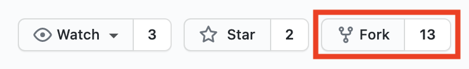
你会看到一个进度屏幕，显示GitHub正在创建你的分叉：
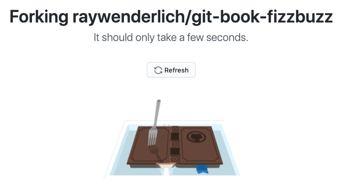
一旦GitHub完成，它就会把你重定向到你个人GitHub账户下新创建的分叉。你会看到页面的URL变为https://github.com/{your-github-username}/git-book-fizzbuzz。
接下来，点击Code按钮下拉，然后点击剪贴板图标，复制该仓库的URL：
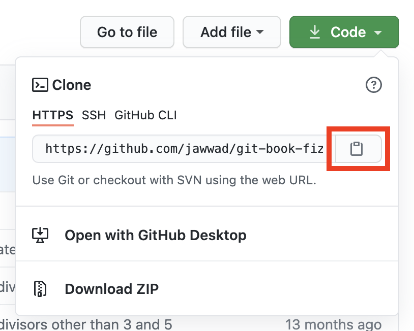
现在，打开终端，cd到这个项目的starter文件夹：
cd path/to/projects/starter
接下来，输入git clone，添加一个space，然后paste复制的仓库URL。
你应该有以下内容，用你的GitHub用户名代替{username}：
git clone https://github.com/{username}/git-book-fizzbuzz.git
按Enter来执行命令。你会看到下面的内容，确认克隆：
Cloning into 'git-book-fizzbuzz'...
...
...
Resolving deltas: 100% (15/15), done.
你已经在你的GitHub账户下成功创建了git-book-fizzbuzz仓库的分叉，并且你已经克隆了这个分叉到你的电脑上。
在你深入了解代码本身之前，你将了解更多关于fork实际是什么。
分叉就是简单的克隆¶
在上一节中，你创建了一个分叉，然后克隆了它。所以，如果一个fork只是一个克隆，那么你就克隆了你的克隆！这就是所谓的fork。
更确切地说，分叉是一个公共的、服务器端的、在你自己账户下的项目克隆，这意味着你可以向它推送修改。
分叉是一个工作流程，不是Git本身的一部分。没有git fork命令可以创建一个仓库的分叉。当你在GitHub中创建一个分叉时，它会在你的账户下创建一个项目的服务器端克隆，并启用某些只有分叉才有的功能，比如创建拉取请求的能力。
就Git而言，上游仓库、你的分叉仓库和你的分叉仓库的本地克隆之间没有任何区别。
为了帮助你内化这一点，你将直接从上游仓库创建另一个克隆。这将告诉你上游克隆与分叉的克隆有什么不同。
确保你仍然在starter文件夹中，并运行以下命令，全部在一个行中，将上游仓库克隆为upstream-git-book-fizzbuzz：
git clone https://github.com/raywenderlich/git-book-fizzbuzz.git upstream-git-book-fizzbuzz
现在，运行以下程序来比较你的分叉的克隆和上游的克隆：
diff -r git-book-fizzbuzz upstream-git-book-fizzbuzz -x logs -u
Note
-x logs是--exclude=logs的缩写，它忽略了logs目录中的时间戳。-u是--unified的缩写，它以统一的格式显示差异--也就是说，用-和+代替<和>。
在结果中，你会看到以下内容，这表明唯一的区别是远程源码的URL：
...
[remote "origin"]
- url = https://github.com/{username}/git-book-fizzbuzz.git
+ url = https://github.com/raywenderlich/git-book-fizzbuzz.git
...
Binary files git-book-fizzbuzz/.git/index and upstream-git-book-fizzbuzz/.git/index differ
最后一行告诉你两个分支的.git/index文件是不同的，这并不重要，因为这是Git用来跟踪阶段性变化的二进制文件。
你甚至可以更新上游仓库的克隆，使其指向你的分叉，方法是更新其原点URL。
运行以下程序，将{username}替换为你的GitHub用户名：
cd upstream-git-book-fizzbuzz
git remote set-url origin https://github.com/{username}/git-book-fizzbuzz.git
运行cd ...回到起始文件夹，然后再次执行diff命令：
cd ..
diff -r git-book-fizzbuzz upstream-git-book-fizzbuzz -x logs -u
现在，除了二进制的.git/index文件外，你不会再看到任何区别。
有了这个，你可以看到，除了origin URL，你的fork的克隆和上游仓库的克隆之间完全没有区别。
现在，删除upstream-git-book-fizzbuzz的克隆，因为你不再需要它了：
rm -rf upstream-git-book-fizzbuzz
接下来，你将探索代码，然后玩一个快速的"找bug"的游戏!
探索代码¶
换到git-book-fizzbuzz目录，用编辑器打开fizzbuzz.py。
cd git-book-fizzbuzz
open fizzbuzz.py # or open manually in an editor of your choice
从文件的末尾开始读取。下面几行意味着当作为一个脚本运行时，main()方法会被执行：
if __name__ == "__main__":
main()
而main()只是执行fizzbuzz()：
def main():
fizzbuzz()
而在这之上，fizzbuzz()对每个数字n从1到101都执行fizzbuzz_for_num(n)，这实际上意味着从1到100。
def fizzbuzz():
for n in range(1, 101):
value = fizzbuzz_for_num(n)
print(value)
最后，fizzbuzz_for_num(...)包含了决定给定数字返回哪个字符串的逻辑。它还允许使用Fizz和Buzz以外的词，甚至允许使用3和5以外的除数：
def fizzbuzz_for_num(
n,
fizz_divisor=3,
fizz_word="Fizz",
buzz_divisor=5,
buzz_word="Buzz",
):
should_fizz = n % 3 == 0
should_buzz = n % 5 == 0
if should_fizz and should_buzz:
return fizz_word + buzz_word
elif should_fizz:
return fizz_word
elif should_buzz:
return buzz_word
else:
return str(n)
然而，上面的代码中有一个错误。看看你能不能发现它。这个错误只在使用3和5以外的除数时表现出来。
如果你还没有发现它，那么当你看了85ca623的提交内容，你肯定会发现这个错误。
运行git show 85ca可以看到该提交的内容。在fizzbuzz.py中，你会看到以下变化：
def fizzbuzz_for_num(
n,
+ fizz_divisor=3,
fizz_word="Fizz",
+ buzz_divisor=5,
buzz_word="Buzz",
):
提交时在方法签名中添加了fizz_divisor和buzz_divisor参数，但没有更新方法本身的代码以使用新的参数! 接下来，你要修复这个错误，并为它打开一个拉动请求。
在git show输出中要注意的第二件事是，该提交还为test_fizzbuzz.py中的test_with_alternate_divisors方法添加了测试。
用下面的命令运行这些测试：
python test_fizzbuzz.py
你会在输出中看到以下三个失败的情况：
Note
如果你看到一个错误，说：AttributeError: 'TestFizzBuzz'对象没有属性subTest，这意味着你的默认Python是Python 2。试着运行python3 test_fizzbuzz.py；如果不成功，你可以跳过这一步。
...
self.assertEqual(fizzbuzz_for_num(7, fizz_divisor=7, buzz_divisor=11), "Fizz")
AssertionError: '7' != 'Fizz'
- 7
+ Fizz
...
...
self.assertEqual(fizzbuzz_for_num(11, fizz_divisor=7, buzz_divisor=11), "Buzz")
AssertionError: '11' != 'Buzz'
- 11
+ Buzz
...
...
self.assertEqual(fizzbuzz_for_num(77, fizz_divisor=7, buzz_divisor=11), "FizzBuzz")
AssertionError: '77' != 'FizzBuzz'
- 77
+ FizzBuzz
...
...
Ran 6 tests in 0.001s
FAILED (failures=3)
上面的输出是说，鉴于fizz_divisor=7，和buzz_divisor=11：
- 对于数字
7，它应该返回Fizz，但是它返回了7。 - 对于数字
11，它应该返回Buzz，但是它返回了11。 - 对于
77号，它应该返回FizzBuzz，但是它返回了77。
很好，提交时还包括了测试，但看起来有人忘了运行测试来验证他们的代码是否真的有效。
不过，有测试肯定是有帮助的，这样你就可以验证你即将进行的修复是否有效! :]
修复自定义除数的错误¶
为你的修复创建一个新的分支，命名为fix-divisors-bug：
git checkout -b fix-divisors-bug
切换回你打开fizzbuzz.py的编辑器。在第11行，用fizz_divisor替换3，在第12行，用buzz_divisor替换5：
11) should_fizz = n % 3 == 0 # replace 3 with fizz_divisor
12) should_buzz = n % 5 == 0 # replace 5 with buzz_divisor
保存文件后，运行git diff，确认你只看到以下变化：
...
- should_fizz = n % 3 == 0
- should_buzz = n % 5 == 0
+ should_fizz = n % fizz_divisor == 0
+ should_buzz = n % buzz_divisor == 0
if should_fizz and should_buzz:
...
现在到了关键时刻! 用以下命令执行测试：
python test_fizzbuzz.py
这一次，所有的测试都应该通过! :]
test_divisible_by_both (__main__.TestFizzBuzz) ... ok
test_divisible_by_five (__main__.TestFizzBuzz) ... ok
test_divisible_by_none (__main__.TestFizzBuzz) ... ok
test_divisible_by_three (__main__.TestFizzBuzz) ... ok
test_with_alternate_divisors (__main__.TestFizzBuzz) ... ok
test_with_alternate_words (__main__.TestFizzBuzz) ... ok
----------------------------------------------------------------
Ran 6 tests in 0.001s
OK
现在，你可以提交你的修改。
在提交请求的信息中，最好能详细说明你为什么要做这些修改，你是如何修复这个错误的，以及你是如何测试你的修复的。
然而，在教程中打出长长的段落并不有趣。相反，你将使用commit_message.txt中的信息，它在starter文件夹中的一个级别上。
然而，你不需要手动打开这个文件。运行下面的命令，用commit_message.txt文件中的信息提交你的修改。
git commit -a --file=../commit_message.txt
现在，运行git show来显示你的最新提交内容。你应该看到以下内容作为你的提交的信息：
Fix bug in which alternate divisors were not used
This commit updates the fizzbuzz_for_num method to start using
the fizz_divisor and buzz_divisor parameters that were added
to the method signature in 85ca623.
Verified the fix by running existing tests in test_fizzbuzz.py
which were previously failing and now pass.
接下来，你要把fix-divisors-bug分支推送到你的分叉上，这样你就可以用它来打开一个拉取请求。
打开一个拉取请求¶
运行以下程序，将当前分支推送到你的分叉上：
git push -u origin head
指定head告诉Git推送当前的分支，所以上面的内容是简写：
git push --set-upstream origin fix-divisors-bug # same as above
现在，该分支在你的分叉中可用，有几种不同的方式可以到达拉取请求创建页面。以下是你可以使用的三种方式。
1.如果你看到你的分叉的GitHub页面上出现类似以下的横幅，你可以点击Compare & pull request按钮。有时横幅并不出现，所以你不能总是指望它。
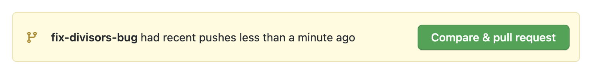
1.如果你看一下前面git push命令的输出，你应该看到在以remote:为前缀的部分内有以下几行，说的是：
...
remote: Create a pull request for 'fix-divisors-bug' on GitHub by visiting:
remote: https://github.com/{username}/git-book-fizzbuzz/pull/new/fix-divisors-bug
...
你可以打开上面列出的URL，直接进入拉动请求创建页面。
1.另一种方法是点击GitHub页面上的branches下拉框，选择fix-divisors-bug分支：
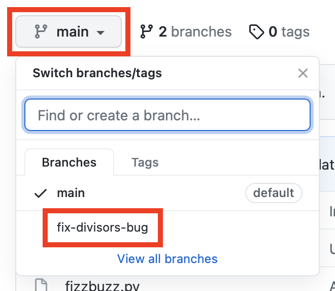
点击Contribute，然后点击Open pull request：
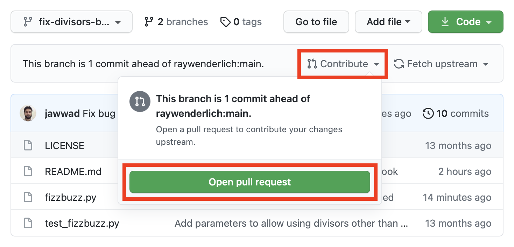
这三种方法都会带你到同一个Open a pull request页面。
GitHub会使用提交信息的第一行作为拉动请求的标题，其余几行作为正文。
最后，点击Create pull request按钮，完成拉动请求的创建：
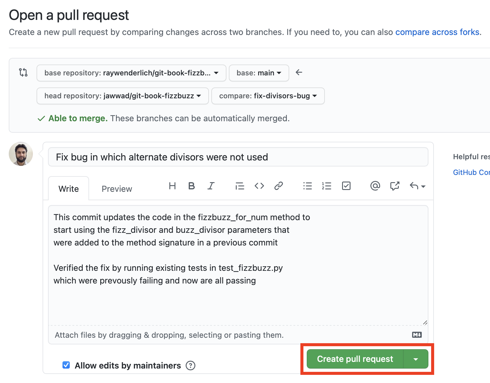
你现在已经创建了你的拉动请求：
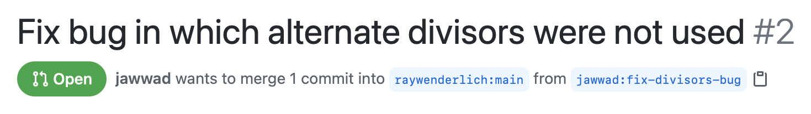
在这一点上，你通常会坐下来，放松，等待上游仓库的维护者合并你的拉动请求。然而，在这种情况下，你还有剩下的章节要完成
虽然你的拉动请求很好，但我感觉上游仓库的维护者不会合并它。如果他这样做了，就会删除这一章的其他读者所需要的bug但请放心，既然它能让我知道你已经读了这一章，那就不要再打开它了
接下来，你将学习如何让你的分叉与上游仓库的主干分支上的任何额外修改保持同步。
重整主分支¶
不幸的是，从你克隆的时候起，上游仓库就没有任何更新了（也许永远不会有！），所以你要通过强制你的主分支回到过去来模拟更新
回到GitHub中的分叉，因为创建拉动请求会把你带到上游的 raywenderlich/git-book-fizzbuzz 仓库。另外，确保在下拉菜单中切换回main分支。
首先，注意它在哪里说：This branch is even with raywenderlich:main.

现在，在终端运行以下命令，切换到你的main分支，并将其重置两个提交：
git checkout main
git reset head~2 --hard
你会收到确认函，确认该分支已被重置：
HEAD is now at 8034fbf Add option to use words other than Fizz and Buzz
你还想把这个改动推送到你的分叉上。要做到这一点，你要做一件别人告诉你永远不要做的事...你要强行推送主分支！在这种情况下，你可以这样做，因为没有人真正使用你的分叉的主分支。在这种情况下，这样做是可以的，因为没有其他人会真正使用你的分叉的主分支。
git push -f origin main
Note
只要运行git push -f就能达到同样的效果。不过，在强行推送时，最好能指定分支，以免不小心强行推送了错误的分支。
刷新GitHub的页面，你会看到它现在写着：This branch is 2 commits behind raywenderlich:main.
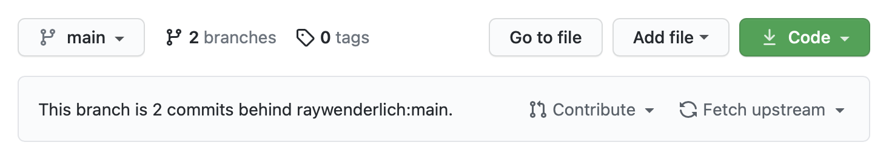
时间旅行完成! 现在你可以假装上游仓库在你分叉后有两个新的提交。
记住，现在有两个Git仓库，你要用新的提交更新它们。一个是你在GitHub上的分叉，另一个是你分叉的本地克隆。
有两种方法可以做到这一点。你可以先更新你的分叉，然后把这些更新拉到你的本地克隆中。或者你可以直接从上游仓库更新你的本地克隆，然后将这些更新推送到你的分叉上。
更简单的方法是直接从GitHub上更新你的分叉，所以你要这么做。但你也可以选择学习如何用另一种方式来做。
通过GitHub更新你的分叉¶
GitHub最近增加了直接从上游仓库更新你的分叉的选项。
点击Fetch upstream下拉菜单，然后点击Fetch and merge。
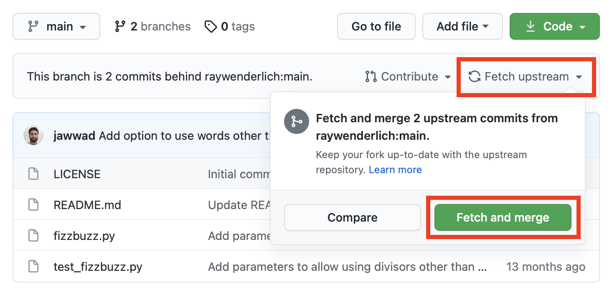
一旦合并完成，它将再次说：This branch is even with raywenderlich:main.
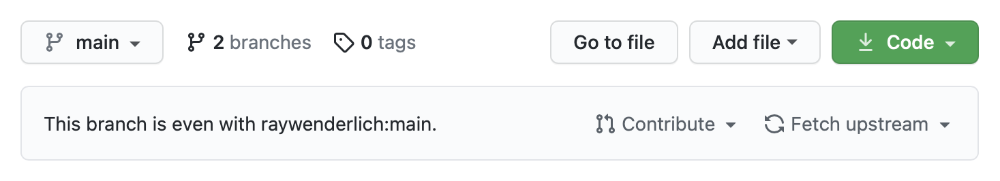
最后，在你的终端，运行git pull从你的分叉中获取并合并这些额外的更新：
$ git pull
From https://github.com/{username}/git-book-fizzbuzz
8034fbf..98b4ef3 main -> origin/main
Updating 8034fbf..98b4ef3
Fast-forward
README.md | 4 ++--
fizzbuzz.py | 2 ++
test_fizzbuzz.py | 10 ++++++++++
3 files changed, 14 insertions(+), 2 deletions(-)
这就是所有的事情了! 你在GitHub上的fork和你的fork的本地克隆现在已经和上游仓库同步了。
使用上游远程更新你的fork¶
这种更新方法稍显复杂，但直到最近，这也是你唯一能做到的方法。本书第一版出版时，GitHub上还没有直接更新分叉的选项。
事实上，我在本书第一版中写了下面这段话。
Note
GitHub很好，它能让你知道你的分叉的主分支比raywenderlich.com的主分支晚两个提交。但它实际上并没有给你一个直接从上游更新你的分支的服务器端选项。点击一个按钮就太容易了，对吧？］
我要假装是GitHub的人看到了这一点，然后决定证明我是错的
既然你可以很容易地从GitHub上更新你的分叉，如果你愿意，可以跳过下面的部分。但这是一个很好的机会来学习如何为你的fork添加一个额外的名为upstream的远程，以便你的本地克隆可以直接从上游拉取变化。
下面的图片代表了这个流程：
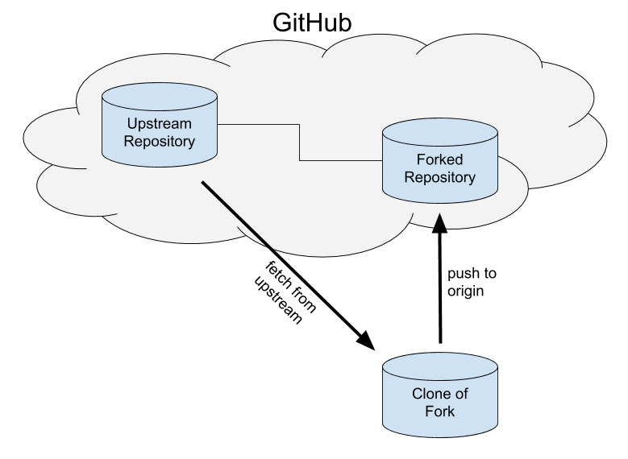
在这个流程中，你将首先从upstream获取并合并变化到你分叉的本地克隆中。然后将这些更新推送到GitHub上的分叉。
首先，你必须再次进行时间旅行，让你的主分支倒退，以便有更新可以从上游获取。
就像以前一样，在终端运行以下命令，切换到你的main分支，并将其重置为两个提交：
git checkout main
git reset head~2 --hard
你会看到确认该分支已被重置：
HEAD is now at 8034fbf Add option to use words other than Fizz and Buzz
并且，再次强制推送这些修改到你在GitHub上的分叉：
git push -f origin main
刷新你在GitHub上的分叉页面，它应该再次显示：This branch is 2 commits behind raywenderlich:main.
现在你已经准备好开始更新过程了。
首先，你需要将你的fork的本地克隆直接连接到上游的远程。你可以通过在本地克隆中添加一个名为upstream的远程来做到这一点。运行下面的命令来添加它：
git remote add upstream https://github.com/raywenderlich/git-book-fizzbuzz.git
现在，运行git remote -v来列出远程。你会看到下面的内容：
origin https://github.com/{username}/git-book-fizzbuzz.git (fetch)
origin https://github.com/{username}/git-book-fizzbuzz.git (push)
upstream https://github.com/raywenderlich/git-book-fizzbuzz.git (fetch)
upstream https://github.com/raywenderlich/git-book-fizzbuzz.git (push)
接下来，运行以下程序，从upstream远程获取更新：
git fetch upstream
由于你添加了一个名为upstream的远程，运行git fetch upstream创建了一个名为upstream/main的远程跟踪分支，当你再次运行它时就会更新。
From https://github.com/raywenderlich/git-book-fizzbuzz
* [new branch] main -> upstream/main
现在，运行git log --oneline --all，你会看到upstream/main比main和origin/main领先两个提交：
061a436 (origin/fix-divisors-bug, fix-divisors-bug) Fix bug in which alterna...
98b4ef3 (upstream/main) Update README to reflect updated name of book
85ca623 Add parameters to allow using divisors other than 3 and 5
8034fbf (HEAD -> main, origin/main, origin/HEAD) Add option to use words oth...
...
现在，通过运行以下程序将upstream/main合并到main：
git merge upstream/main
Note
为了演示，取和合并是分开进行的，但你也可以直接运行git pull upstream main，这是运行git fetch upstream和git merge upstream/main命令的一个快捷方式。
最后，推送更新后的分支到你的分叉：
git push
再次刷新你的fork的GitHub页面，你会看到它再次说：This branch is even with raywenderlich:main.
祝贺您！您已经用上游分支的两个附加提交更新了您的分叉的main分支。你已经用上游的main分支的两个附加提交更新了你的分叉main分支。如果你是用第二种方法做的，那就更要恭喜你了。
从其他分叉中获取变化¶
你可能偶尔会想把其他分叉的特性分支合并到你的分叉中。假设你发现了一个bug，并注意到有一个pull request可以修复它，但还没有人把它合并到上游仓库中。
在这种情况下，你可以将拉取请求中的分支合并到你的分叉中。不建议将上游/主干分支以外的任何分支合并到你的分叉的主干分支中，因为你的主干分支应该始终反映上游的主干分支。
运行下面的命令，创建一个新的development分支，并将你的fix-divisors-bug分支合并到其中：
git checkout -b development
git merge fix-divisors-bug
如果你添加了一个额外的远程，从该仓库获取分支就变得很容易。运行 git fetch {remotename} 将获取所有的远程分支，并以{remotename}/{branchname}的格式创建远程跟踪分支。
如果你想从不同的分叉中获取单个分支，则无需将该分叉作为一个额外的远程分支加入。通常你会为那些你想从多个分支获取的分支添加远程。
你要获取的特性分支已经有一个拉取请求了。它是一个小功能，增加了让fizzbuzz.py打印一个自定义范围的能力，而不是总是使用1到100。
请浏览以下页面，查看该请求：
https://github.com/raywenderlich/git-book-fizzbuzz/pull/3
你会看到它说："jawwad想从jawwad:allow-custom-range合并1个提交到raywenderlich:main"。这告诉你，你想拉动的修改来自jawwad从allow-custom-range分支的分叉。
点击Files changed标签来查看所包含的修改。
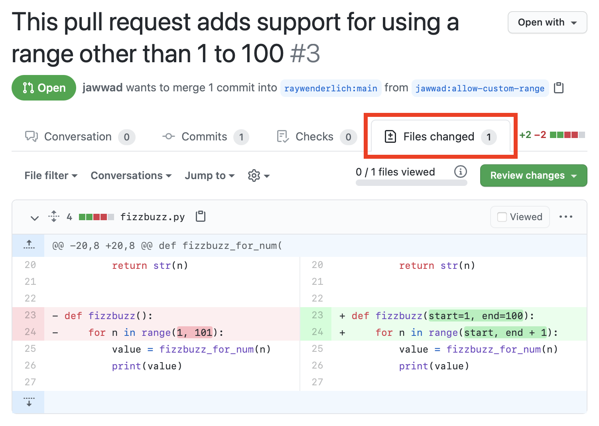
Note
你的视图可能会根据你的设置和GitHub的更新而略有不同。如果你没有看到并排的变化，而你又想看到，你可以选择齿轮图标（Jump to的右边）并选择Split视图而不是Unified。随意在两者之间切换，看看有什么不同。
这看起来是一个相当简单的更新，而且可能会派上用场，所以你想把它合并到你的开发分支。
有三种方法可以做到这一点。你可以。
- 使用另一个分叉的版本库的
URL，直接从它那里获取修改。 - 使用特殊的拉动请求参考从上游获取修改。
- 将另一个分叉添加为额外的远程。
接下来，你将尝试第一种方法，直接使用另一个分叉的版本库的URL。
直接从URL获取¶
要从一个URL获取，只需用该URL代替远程名称。所以，举例来说，你应该运行git fetch upstream，而不是git fetch upstream：
git fetch https://github.com/raywenderlich/git-book-fizzbuzz.git
然而，fetch在URL上的行为与在命名的远程上的行为不同。正如你之前看到的，运行git fetch upstream可以创建远程跟踪分支upstream/main。但如果没有一个命名的远程，就没有命名空间来创建远程跟踪分支。
所以你必须给命令提供要创建的分支名称。但当你指定一个分支名称作为参数时，该参数实际上是为它应该获取的远程分支而设的：
git fetch {remote_url} {remote_branch_name}
所以你必须给它一个本地分支，以便把它取进来：
git fetch {remote_url} {remote_branch_name:local_branch_name}
那么，如果你去掉:local_branch_name部分会怎样？最好的方法是尝试一下。运行下面的fetch命令：
git fetch https://github.com/jawwad/git-book-fizzbuzz.git allow-custom-range
你会看到以下输出：
From https://github.com/jawwad/git-book-fizzbuzz
* branch allow-custom-range -> FETCH_HEAD
那么这个FETCH_HEAD是什么东西？它实际上是一个引用，包含了被获取的最后一次提交的哈希值。运行以下程序，看看它包含什么：
cat .git/FETCH_HEAD
你会看到以下内容：
c7580ff4a6231bbcfd21b46ddbb204ef472f590b branch 'allow-custom-range' of https://github.com/jawwad/git-book-fizzbuzz
现在，你将创建一个基于FETCH_HEAD的新分支。由于将分支命名为allow-custom-range from-fetch-head感觉有点长，所以将allow-custom-range简写为acr，命名为acr-from-fetch-head。
git branch acr-from-fetch-head FETCH_HEAD
运行git log --oneline --graph --all来验证该分支是否被创建。你会看到acr-from-fetch-head分支的名字在c7580ff提交哈希旁边：
* 061a436 (HEAD -> development, origin/fix-divisors-bug, fix-divisors-bug) F...
* 98b4ef3 (upstream/main, origin/main, origin/HEAD, main) Update README to r...
| * c7580ff (acr-from-fetch-head) Add start and end parameters to the fizzbu...
|/
* 85ca623 Add parameters to allow using divisors other than 3 and 5
* 8034fbf Add option to use words other than Fizz and Buzz
...
接下来，你将再次运行相同的命令，但这次你将给它一个本地分支的名字，以便将修改内容取到其中。
运行下面的命令，将jawwad分叉中的allow-custom-range分支取到一个同名的本地分支中：
git fetch https://github.com/jawwad/git-book-fizzbuzz.git allow-custom-range:allow-custom-range
你会看到以下内容，表明一个新的本地分支已经创建：
From https://github.com/jawwad/git-book-fizzbuzz
* [new branch] allow-custom-range -> allow-custom-range
运行git log --oneline --graph --all来确认：
* 061a436 (HEAD -> development, origin/fix-divisors-bug, fix-divisors-bug) F...
* 98b4ef3 (upstream/main, origin/main, origin/HEAD, main) Update README to r...
| * c7580ff (allow-custom-range, acr-from-fetch-head) Add start and end para...
|/
* 85ca623 Add parameters to allow using divisors other than 3 and 5
* 8034fbf Add option to use words other than Fizz and Buzz
...
你会看到c7580ff提交显示了对allow-custom-range和acr-from-fetch-head的引用。
这两个都只是使用版本库的URL来获取的第一种方式。接下来，你将通过使用一个特殊的拉动请求参考来使用第二种方式。
取一个拉动请求¶
任何属于拉取请求的分支都可以在上游仓库中通过一个特殊的引用获得，其格式为pull/{ID}/head。所以对于这个拉取请求，它应该是pull/3/head。
如果你跳过了关于使用上游远程更新你的分叉的可选部分，只需运行以下命令，首先添加一个上游远程：
git remote add upstream https://github.com/raywenderlich/git-book-fizzbuzz.git
你可以运行git remote -v来验证它是否被添加，并且应该在输出中看到它。
现在，运行下面的命令，从pull/3/head创建一个本地acr-from-pull分支：
git fetch upstream pull/3/head:acr-from-pull
然后运行下面的命令来验证本地的acr-from-pull分支是否被创建：
git log --oneline acr-from-pull
你会看到acr-from-pull和allow-custom-range在同一个提交哈希上，表明pull/3/head也指向同一个提交：
c7580ff (allow-custom-range, acr-from-pull, acr-from-fetch-head)
在你实际合并这个改动之前，你将使用第三种获取方式，即添加一个fork作为额外的远程，并从它获取。这也会让你体验到当你有一个命名的远程分支时，远程跟踪分支是如何自动创建的。
添加一个额外的远程¶
运行下面的程序，将jawwad的分叉作为一个额外的远程，命名为jawwad：
git remote add jawwad https://github.com/jawwad/git-book-fizzbuzz.git
运行git remote -v以确认其加入：
jawwad https://github.com/jawwad/git-book-fizzbuzz.git (fetch)
jawwad https://github.com/jawwad/git-book-fizzbuzz.git (push)
origin https://github.com/jawwadahmad/git-book-fizzbuzz.git (fetch)
origin https://github.com/jawwadahmad/git-book-fizzbuzz.git (push)
upstream https://github.com/raywenderlich/git-book-fizzbuzz.git (fetch)
upstream https://github.com/raywenderlich/git-book-fizzbuzz.git (push)
现在，运行git fetch jawwad，你会看到fetch命令也创建了远程跟踪分支--因为现在有一个jawwad命名空间来创建它们。
From https://github.com/jawwad/git-book-fizzbuzz
* [new branch] add-type-hints -> jawwad/add-type-hints
* [new branch] allow-custom-range -> jawwad/allow-custom-range
* [new branch] fix-divisors-bug -> jawwad/fix-divisors-bug
* [new branch] main -> jawwad/main
这将获取该分叉的所有分支。你可以通过将它们与以下页面上的分支进行比较来验证：
https://github.com/jawwad/git-book-fizzbuzz/branches/all
如果你再次运行git log --oneline acr-from-pull，你也会看到该提交中对jawwad/allow-custom-range的额外引用：
c7580ff (jawwad/allow-custom-range, allow-custom-range, acr-from-pull, acr-from-fetch-head)
这只是为了演示从一个额外的名为远程的地方提取数据。由于你并不真正需要这个额外的远程，你可以用下面的命令删除它：
git remote rm jawwad
git remote rm {remotename}命令也会删除远程跟踪的分支。
你可以运行git remote -v来验证远程是否被删除。为了验证远程跟踪分支是否被删除，你可以运行git log --oneline acr-from-pull。在c7580ff的提交中，你将不再看到对jawwad/allow-custom-range分支的引用。
你已经看到了从其他分叉获取更新的三种不同方式。现在，你终于可以合并它们了!
合并拉动请求¶
运行以下程序来合并allow-custom-range分支：
git merge allow-custom-range --no-edit
现在，删除其他两个分支：
git branch -d acr-from-pull acr-from-fetch-head
即使你已经合并了allow-custom-range分支，保留它也是一个好主意--以防你需要从合并的不同分支中重新创建你的开发分支。
最后，将development分支推送到你的分叉上。
git push -u origin head
祝贺你！你学会了如何分叉一个版本库并使其与原始上游版本库保持一致。你学会了如何分叉一个版本库并使其与原始上游版本库保持同步。此外，你还学会了从分叉和拉取请求中获取修改的各种方法。
关键点¶
- 分叉工作流程是用来为那些你没有推送权限的仓库做贡献的，比如开源仓库。
- 分叉包括三个步骤。点击
GitHub上的Fork，克隆你的Fork，并可选择添加一个名为upstream的远程。 - 你应该定期从
upstream/main上获取修改，以合并到你的fork的主分支。 - 你可以获取推送到其他分叉的任何分支，即使没有拉取请求。
- 要从一个指定的远程分支获取所有变化，请使用
git fetch {remotename}。 - 要使用版本库的
URL获取一个分支，需要同时指定远程和本地分支的名称：git fetch {remote_url} {remote_branch_name:local_branch_name}。